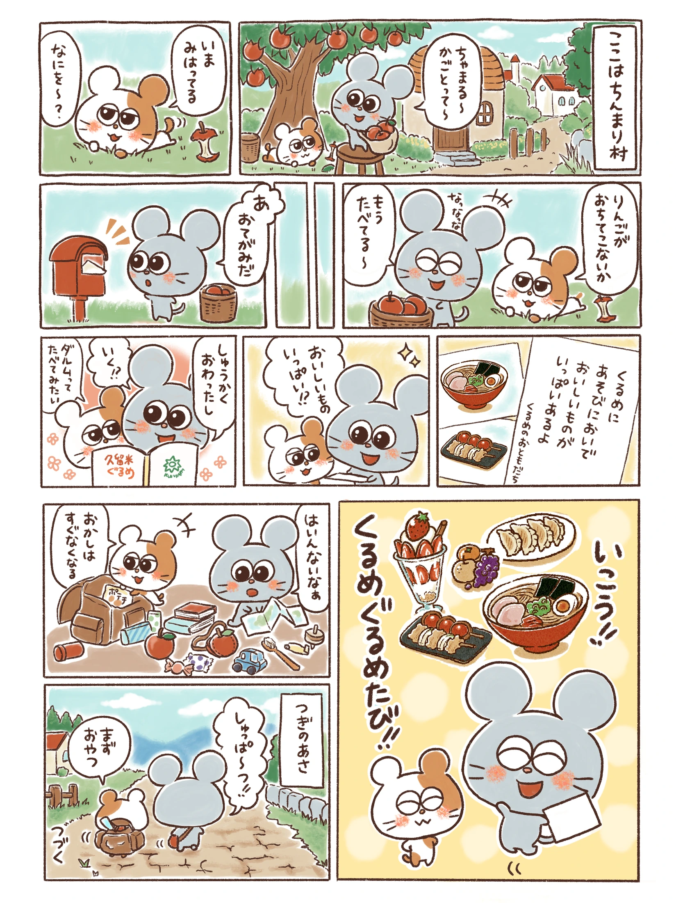
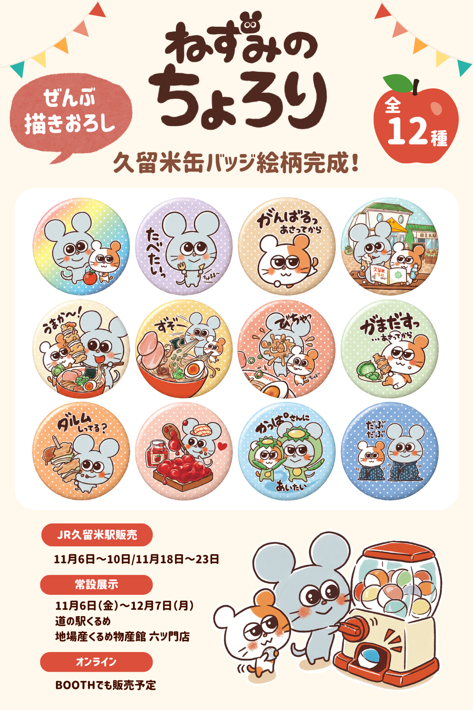
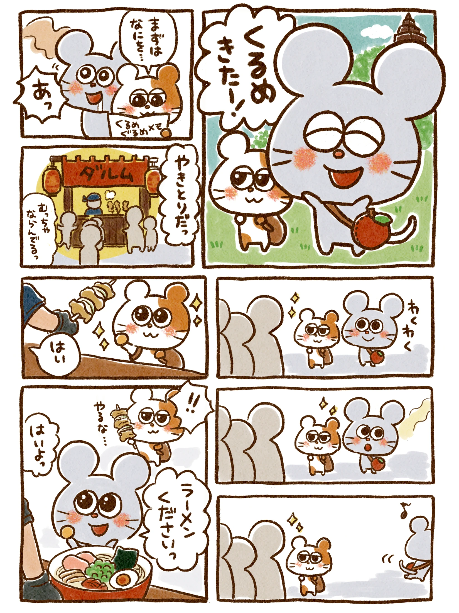
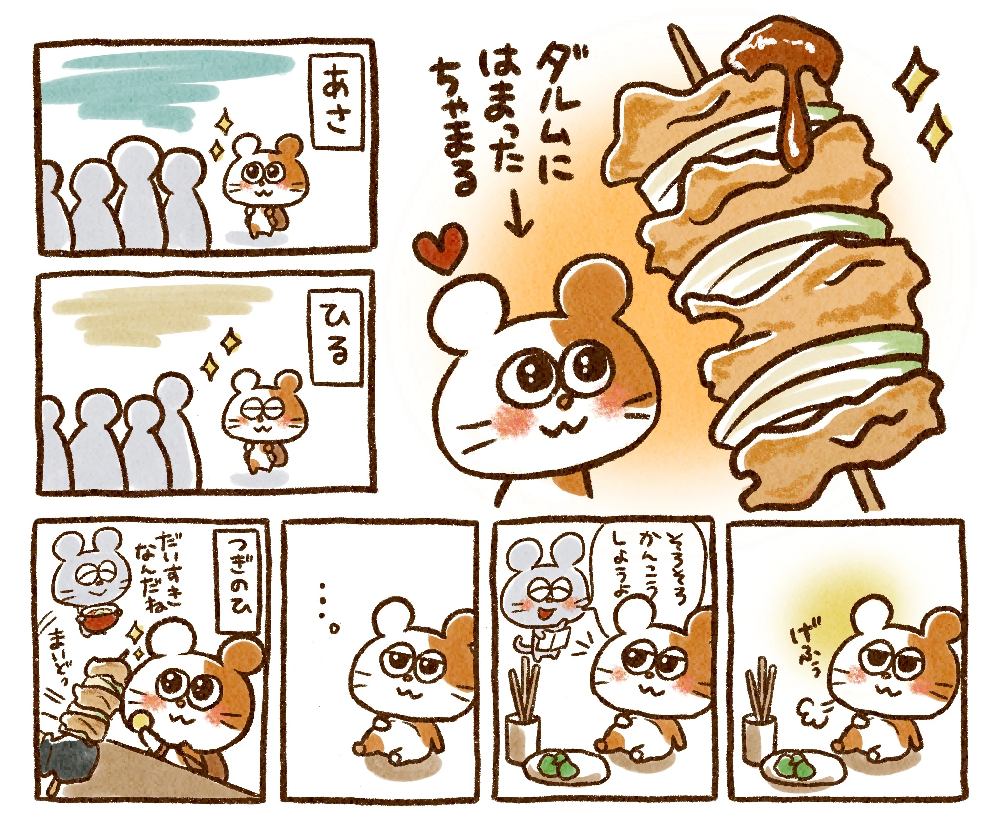
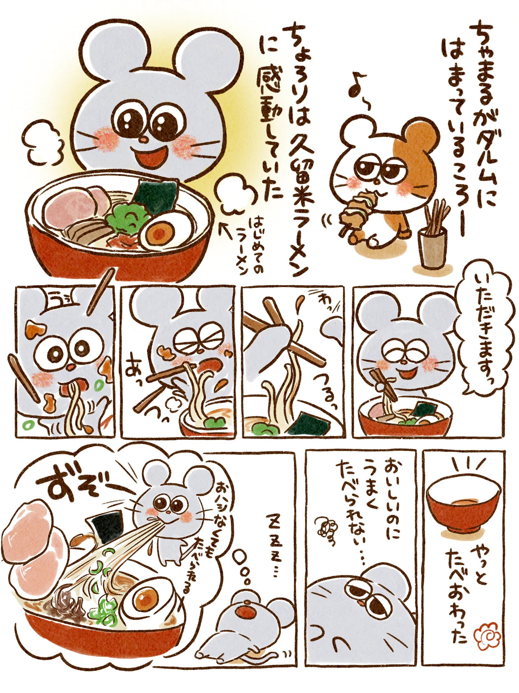
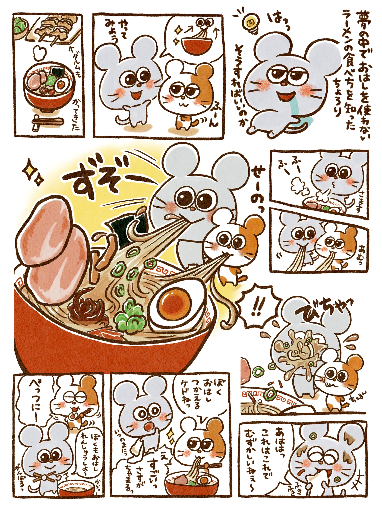
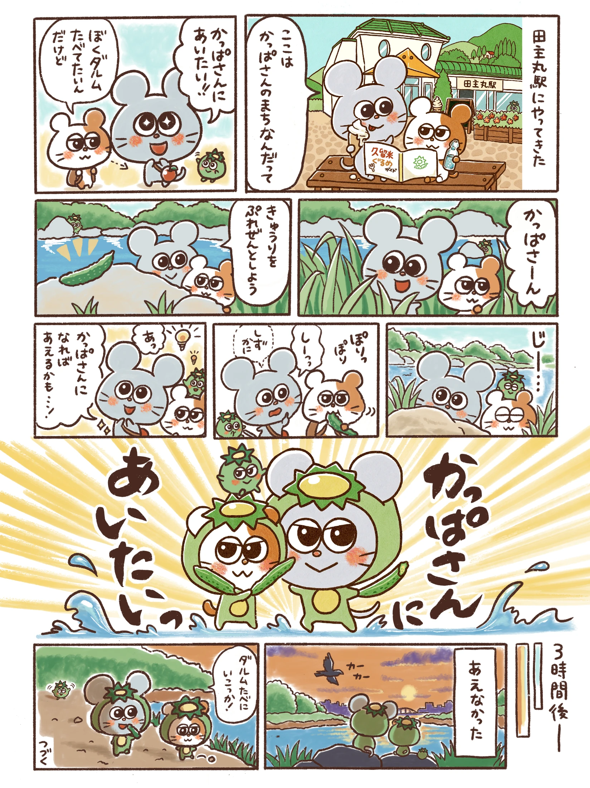
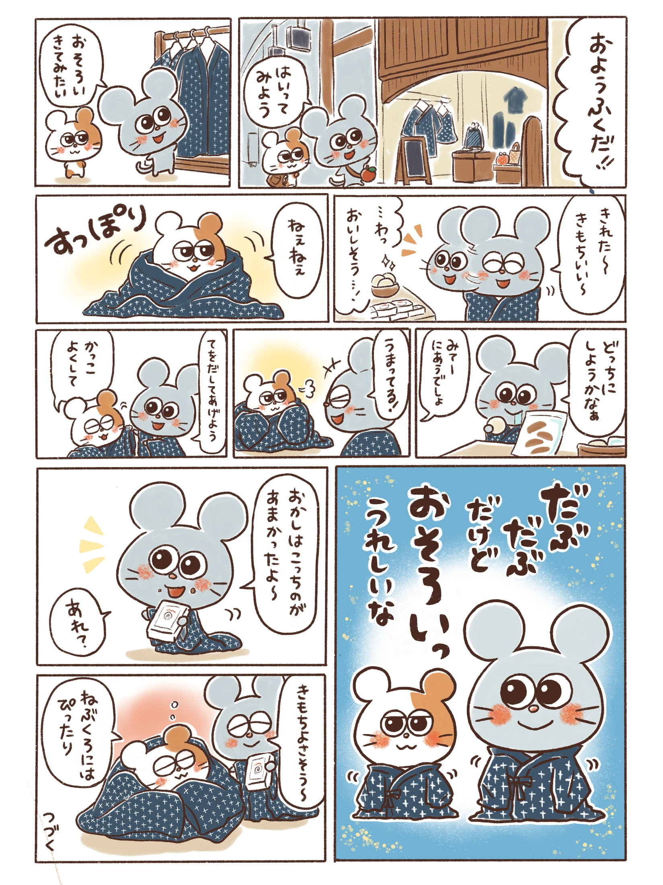

01.くるめぐるめたびへ！

CHARA KURUME 2026
部門1 ファイナリスト
皆さんのおかげで、ふたりの旅が続きます。
おいしい出会いと、小さなわくわくを漫画に。

NEW! KURUME BADGES
ぜんぶ描きおろし・全12種類
久留米のグルメや、ふたりの漫画のひとコマが缶バッジに。ちょろりとちゃまるのいろんな表情を、ぎゅっと詰めこみました。
画像をタッチすると、全12種類の絵柄と販売のお知らせを大きくご覧いただけます。
販売期間・場所を見る
WATCH OUR JOURNEY
声・BGM入り・26秒
ちょろりとちゃまるの旅が、久留米へ。ファイナリスト決定のお知らせを、声入りの動画でもご覧いただけます。
再生ボタンを押すと、音声と一緒に動画が流れます。
動画が再生できない場合はこちらREAD THE COMICS
ちょろりとちゃまる、おいしいものに出会う旅。
上から順番に、ゆっくりお楽しみください。
画像をタッチすると、大きくご覧いただけます。







CHEER FOR OUR JOURNEY
「戦い」というより、ここまでの道中もすでに楽しいこの企画。皆さんにも、ふたりと一緒に旅を楽しんでもらえたらうれしいです！
キャラ久留米2026の部門1で、ねずみのちょろりがファイナリストに選ばれました。SNS反応・Web一般投票ともに3位。次は、缶バッジの応援ガチャ販売へ進みます。
ファイナリスト決定の投稿を見る ↗EVENT INFORMATION
2026年10月12日時点の情報です。最新の日程・販売情報は公式案内をご確認ください。